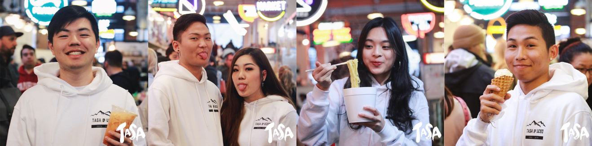
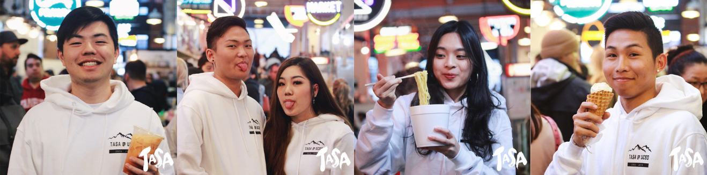

ENYU CHEN
― DESIGN FOR UCSD TASA

Description
Since May 2018, I’ve been the Design Chair at UCSD TASA, the Taiwanese American Student Association. In which, I served as a design chair and created the marketing collateral.
PositionSolo Designer (May 2018 → Present)
SkillsBrand Identity, Graphic Design, Visual Design
ToolsAdobe Photoshop, Illustrator


 
